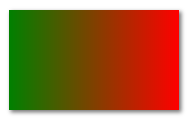

渐变色¶
在上面的例子中，我们图形的颜色是单一的。而在实际生活中，颜色往往都不是均匀的。在画布中，我们可以创建一个变化的颜色来实现这个效果。
线性渐变 LinearGardient¶
定义和用法 createLinearGradient() 方法创建线性的渐变对象。
渐变可用于填充矩形、圆形、线条、文本等等。
提示：请使用该对象作为 strokeStyle 或 fillStyle 属性的值。
提示：请使用 addColorStop() 方法规定不同的颜色，以及在 gradient 对象中的何处定位颜色。
创建一个渐变色对象：
var grd = ctx.createLinearGradient(x0,y0,x1,y1);
参数说明 | 参数值 | 描述 | | ------ | ---------------------- | | x0, y0 | 渐变开始点的 x、y坐标 | | x1, y1 | 渐变开始点的 x、y 坐标 |
创建了渐变色对象后，还需要指定渐变色的颜色。Gradient对象方法提供了一个方法，来添加渐变的颜色。只要制定特定位置的颜色，剩余的过渡颜色计算机会帮忙计算。比如在开始的位置添加绿色，在结束的位置添加红色，那么中间的位置就是绿色和红色的混合色，越靠近开始的位置，颜色越接近绿色，越靠近结束的位置，颜色越接近红色。
最少颜色数
你至少需要添加2个颜色才能组成一个渐变色，且他们不能重叠。
| 方法 | 说明 |
|---|---|
| addColorStop(rate, color); | 为渐变色添加一个颜色 |
| rate | 比率，从0~1，表示该处的颜色值，其他位置的值由相邻的stop计算而出 |
| color | 颜色值，可以使用任意一种颜色表达式 |
实例：渐变色长方形
var grd = ctx.createLinearGradient(100,0,270,0);
grd.addColorStop(0,"green");
grd.addColorStop(1,"red");
rectangle(100, 100, 170, 100, grd);

放射渐变 RadialGradient¶
定义和用法 createLinearGradient() 方法创建放射状/圆形渐变对象。
渐变可用于填充矩形、圆形、线条、文本等等。
提示：请使用该对象作为 strokeStyle 或 fillStyle 属性的值。
提示：请使用 addColorStop() 方法规定不同的颜色，以及在 gradient 对象中的何处定位颜色。
创建一个放射渐变
var grd = ctx.createRadialGradient(x0, y0, r0, x1,y1, r1);
参数说明
| 参数 | 说明 |
|---|---|
| x0, y0 | 渐变的开始圆的圆心的 x 坐标、 y 坐标 |
| r0 | 渐变的开始圆的半径 |
| x1, y1 | 渐变结束的圆的圆心的 x 坐标、 y 坐标 |
| r1 | 渐变结束的圆的半径 |
同样，使用addColorStop添加渐变的颜色。
var grd = ctx.createRadialGradient(100, 50, 0, 100, 100, 100);
grd.addColorStop(0,"red");
grd.addColorStop(1,"yellow");
circle(100, 100, 100, grd);

实例：使用渐变色绘制的彩虹
canvas.resize(450, 300);
rectangle(0, 0, canvas.width, canvas.height, "lightblue");
var grd = ctx.createRadialGradient(225, 300, 175, 225, 300, 225);
grd.addColorStop(0,"lightblue");
grd.addColorStop(1/8,"red");
grd.addColorStop(2/8,"orange");
grd.addColorStop(3/8,"yellow");
grd.addColorStop(4/8,"green");
grd.addColorStop(5/8,"cyan");
grd.addColorStop(6/8,"blue");
grd.addColorStop(7/8,"purple");
grd.addColorStop(1,"lightblue");
circle(225, 300, 225, grd);